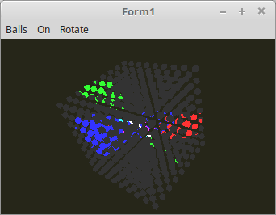

17 - Uniform Buffer Object (UBO)
20 - Mehrere UBOs in einem Shader

Es ist auch möglich, mehrere Unifom-Blöcke im Shader anzulegen.
Ein Uniform-Block wurde verwendet für die Matrizen.
Der andere für die Lichtparameter.
Hier sieht man auch gut wie einfach es ist, alle Parameter für die 3 Lampen in einem Rutsch dem Shader zu übergeben.
glUniform müsste man dazu zig mal aufrufen und wen man mehrere Shader verwendet, müsste man dies sogar bei jeden Shader einzeln machen.
Die Deklaration der Lichtparameter und der Matrizen für den UBO.
type
TLight = record
Uniform_ID,
UBO: GLuint;
bindingPoint: gluint;
Data: array[0..2] of record
On: boolean;
CutOff: GLfloat;
pad0: TVector2f;
Pos: TVector3f;
pad1: GLfloat;
Color: TVector3f;
pad2: GLfloat;
end;
end;
TMatrixRec = record
Uniform_ID,
UBO: GLuint;
bindingPoint: gluint;
Data: record
Model,
World: TMatrix;
end;
end;
var
Light: TLight;
MatrixRec: TMatrixRec;
Die Lichtparameter mit Anfangswerten laden.
procedure TForm1.CreateScene;
const
LichtPositionRadius = 50.0;
var
i: integer;
begin
with Light do begin
bindingPoint := 0;
for i := 0 to 2 do begin
with Data[i] do begin
On := True;
CutOff := cos(pi / 2 / 16);
Color.FromInt($FF0000 shr (i * 8));
end;
end;
with Data[0] do begin
Pos := vec3(-1.0, 0.0, 0.0);
Pos.Scale(LichtPositionRadius);
end;
with Data[1] do begin
Pos := vec3(0.0, 1.0, 0.0);
Pos.Scale(LichtPositionRadius);
end;
with Data[2] do begin
Pos := vec3(1.0, 1.0, -1.0);
Pos.Scale(LichtPositionRadius);
end;
end;
Für die beiden UBOs Speicher reservieren.
procedure TForm1.InitScene;
begin
with Light do begin
// Speicher für UBO reservieren
glBindBuffer(GL_UNIFORM_BUFFER, UBO);
glBufferData(GL_UNIFORM_BUFFER, sizeof(Data), nil, GL_DYNAMIC_DRAW);
// UBO mit dem Shader verbinden
glUniformBlockBinding(Shader.ID, Uniform_ID, bindingPoint);
glBindBufferBase(GL_UNIFORM_BUFFER, bindingPoint, UBO);
end;
with MatrixRec do begin
bindingPoint := 3;
// Speicher für UBO reservieren
glBindBuffer(GL_UNIFORM_BUFFER, UBO);
glBufferData(GL_UNIFORM_BUFFER, sizeof(Data), nil, GL_DYNAMIC_DRAW);
// UBO mit dem Shader verbinden
glUniformBlockBinding(Shader.ID, Uniform_ID, bindingPoint);
glBindBufferBase(GL_UNIFORM_BUFFER, bindingPoint, UBO);
end;
Hier sieht man gut, wie die UBO-Daten neu in den Puffer geladen werden.
Die Lichtparamter, werden über das Menü und dem Timer verändert.
Die Matrizen werden hier berechnet.
procedure TForm1.ogcDrawScene(Sender: TObject);
var
x, y, z: integer;
scal, d: single;
begin
glClear(GL_COLOR_BUFFER_BIT or GL_DEPTH_BUFFER_BIT); // Frame und Tiefen-Buffer löschen.
glEnable(GL_CULL_FACE);
glCullface(GL_BACK);
Shader.UseProgram;
// --- Lichtparameter in UBO laden.
with Light do begin
glBindBuffer(GL_UNIFORM_BUFFER, UBO);
glBufferSubData(GL_UNIFORM_BUFFER, 0, sizeof(Data), @Data);
end;
glBindVertexArray(VBCube.VAO);
// --- Zeichne Würfel
d := (7 / (CubeSize * 2 + 1)) * 8;
if CubeSize > 0 then begin
scal := 40 / (CubeSize * 2 + 1);
end else begin
scal := 60;
end;
scal /= 2;
for x := -CubeSize to CubeSize do begin
for y := -CubeSize to CubeSize do begin
for z := -CubeSize to CubeSize do begin
with MatrixRec do begin
// --- Matrixzen berechnen.
with Data do begin
Model.Identity;
Model.Translate(x * d, y * d, z * d);
Model.Scale(scal);
Model := ModelMatrix * Model;
World := Model;
World := FrustumMatrix * WorldMatrix * World;
end;
// --- Matrixzen in UBO laden.
glBindBuffer(GL_UNIFORM_BUFFER, UBO);
glBufferSubData(GL_UNIFORM_BUFFER, 0, sizeof(Data), @Data);
end;
glDrawArrays(GL_TRIANGLES, 0, Length(CubeVertex) * 3); // Zeichnet einen kleinen Würfel.
end;
end;
end;
ogc.SwapBuffers;
end;
Im Shader sieht man die beiden Uniform-Blöcke.
Für die Matrizen im Vertex-Shader, und für die Lichtparameter im Fragment-Shader.
Es dürfen auch mehrere Blöcke in einem Shader vorhanden sein.
Vertex-Shader:
#version 330
layout (location = 0) in vec3 inPos; // Vertex-Koordinaten
out Data {
vec3 pos;
} DataOut;
// Matrizen zu einem Block zusammengefasst.
layout(std140) uniform Matrix {
mat4 ModelMatrix;
mat4 WorldMatrix;
} matrix;
void main(void)
{
gl_Position = matrix.WorldMatrix * vec4(inPos, 1.0);
DataOut.pos = (matrix.ModelMatrix * vec4(inPos, 1.0)).xyz;
}
Fragment-Shader:
#version 330
#define ambient vec3(0.2, 0.2, 0.2)
#define PI 3.1415
in Data {
vec3 pos;
} DataIn;
// Struktur einer Lichtquelle.
struct Light {
bool On;
float CutOff;
vec3 Pos;
vec3 Color;
};
// Drei Lichtquellen in der Array.
layout(std140) uniform light0 {
Light light[3];
};
out vec4 outColor; // ausgegebene Farbe
// Berechnet die einzelnen Lichtquellen.
vec3 CalcLight(Light light) {
vec3 lp = light.Pos;
vec3 lightDirection = normalize(DataIn.pos - lp);
vec3 spotDirection = normalize(-light.Pos);
float angle = dot(spotDirection, lightDirection);
angle = max(angle, 0.0);
if(angle > light.CutOff) {
return vec3(1.0);
} else {
return vec3(0.0);
}
}
// In der Schleife werden alle Lichtquellen addieren.
void main(void)
{
outColor = vec4(ambient, 1.0);
for (int i = 0; i <= 2; i++) {
if (light[i].On) {
outColor.rgb += CalcLight(light[i]) * light[i].Color;
}
}
}